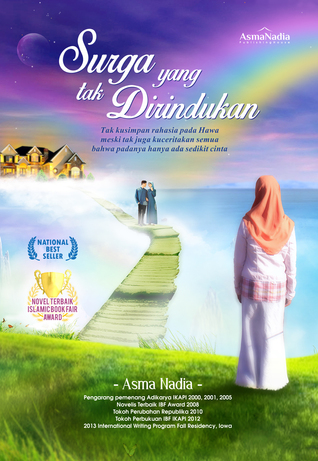

Review Novel
Surga Yang Tak Dirindukan
Menceritakan tentang kehidupan dua orang wanita yang tidak ada hubungannya satu sama lain.
Wanita pertama, Arini, muslimah cantik mengenakan jilbab yang diperankan oleh Laudya Cintya Bella. Arini adalah istri dari seorang pria yang bernama Mas Pras yang diperankan oleh Fedi Nuril. Wanita kedua seorang wanita keturunan Cina yang culun dan tidak gaul bernama Mei Rose yang diperankan oleh Raline Shah. Arini merupakan wanita yang kebahagiannya hampir sempurna. Memiliki suami yang tampan, mapan, perhatian dan selalu setia berada disampingnya. Mereka sudah dikaruniai tiga orang anak. Sedangkan Mei Rose? Kehidupannya sangat berbeda dengan Arini. Ia sudah tidak memiliki siapa-siapa lagi. Yang ia miliki hanyalah seorang tante yang galak yang menganggapnya sebagai pembantu. Selama ini Mei Rose tinggal di rumah tantenya tersebut. Ditempatnya kerjanya, Mei Rose juga tidak memiliki pergaulan. Hingga pada suatu hari seorang pria melakukan PDKT dengannya. Tentu saja Mei Rose menerima dengan senang hati. Namun lelaki tersebut memiliki niat lain. Lelaki itu memperkosa Mei Rose di kantor hingga hamil dan lelaki itu tidak mau bertanggung jawab. Untuk menutupi kejadian tersebut, Mei Rose mengadakan obral bagi lelaki manapun yang mau menikahi dirinya. Tidak memandang penampilan, harga, pekerjaan, atau lainnya. Yang ia mau hanyalah status agar kejadian yang menimpa dirinya tidak membuat namanya menjadi buruk. Akhirnya ada lelaki yang mendekati dan berjanji untuk menikahinya. Semuanyasudah terencana dengan baik hingga hari pernikahan. Namun lelaki itu ternyata memiliki niat lain. Ia kabur membawa seluruh modal nikah yang sudah dikeluarkan oleh Mei Rose. Ditengah kekecewaan Mei Rose yang sangat mendalam, dan masih menggunakan gaun pengantin, Mei Rose mengendarai mobil dengan kecepatan tinggi dan berniat untuk bunuh diri. Mei Rose menabrakan mobilnya hingga tak sadarkan diri. Disinilah kejadian pahit bagi Arini dimulai. Mas Pras suami dari Arini yang saat itu sedang dalam perjalanan menemukan mobil yang dikendarai Mei Rose dalam keadaan terbalik dan keadaan Mei Rose cukup parah. Mas Pras membawa Mei Rose kerumah sakit. Singkat cerita, sikap Mas Pras yang lembut menarik perhatian Mei Rose. Akhirnya Mei Rose melahirkan bayinya yang diberi nama Akbar serta hubungan Mas Pras dan Mei Rose berlanjut hingga menikah siri. Arini mengetahui pernikahan siri tersebut. Ia mendatangi rumah Mei Rose hendak “melabrak” wanita tersebut. Pada saat mereka berdua bertemu dirumah Mei Rose, Mas Pras datang dan tentu saja sangat terkejut. Namun pada saat yang sama Akbar sakit, Pras akhirnya membawa Akbar ke rumah sakit tanpa memperdulikan perasaan Arini. Arini merasa tidak diprioritaskan dan pergi dari rumah tersebut. Akhir cerita yang sudah tayang di layar lebar adalah Arini istri dari Mas Pras akhirnya mengetahui yang sebenarnya dan bisa menerima Mei Rose dengan baik. Tetapi diakhir cerita Mei Rose memutuskan untuk pergi dan menjalani hidup baru ditempat yang baru. Begitulah akhir dari cerita dua orang wanita tersebut, tema dari film ini adalah bukan tentang “poligami” saja, tetapi setelah saya menyaksikan film tersebut sampai akhir ada makna lain dari pesan yang ingin disampaikan pada filmnya, yaitu bukan tentang poligami yang coba ditonjolkan, melainkan sebuah tema yang lain, yaitu kebesaran cinta seorang Ibu terhadap anaknya. Kebesaran cinta seorang wanita terhadap pria yang dicintainya telah mengalahkan hawa nafsu yang akhirnya justru akan merusak kebahagian dari cinta itu sendiri. Menurut saya, novel ini dapat menginspirasi kita yang sudah berkeluarga dan yang belum berkeluarga agar belajar tentang pernikahan dan bisa mengambil hikmah dari semua cerita didalamnya.